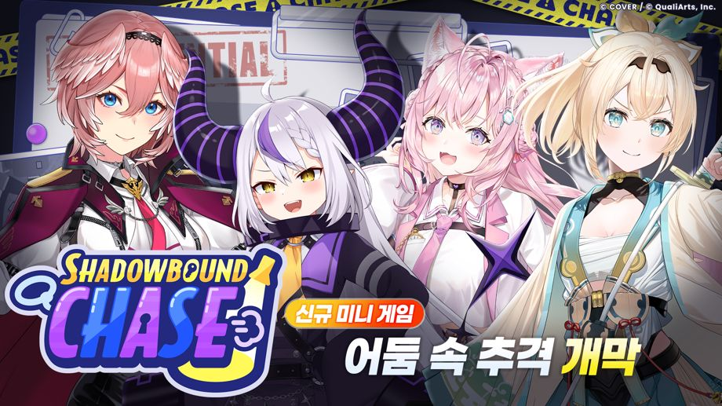
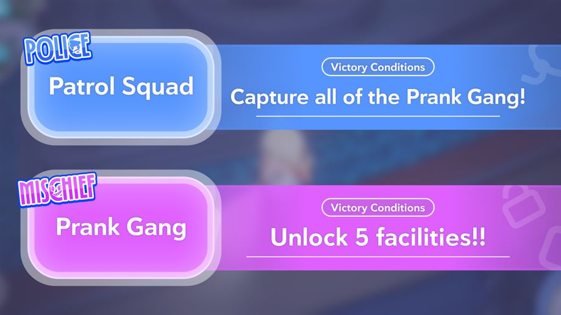
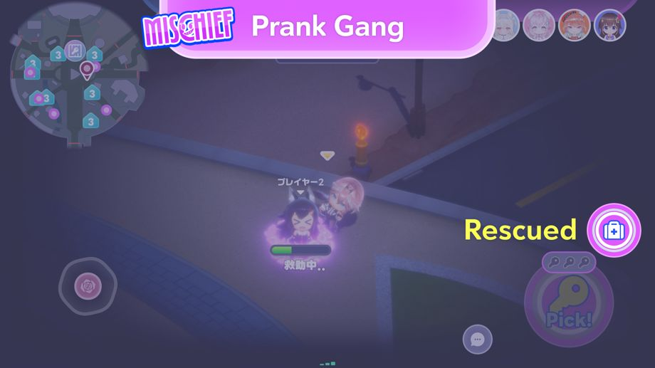
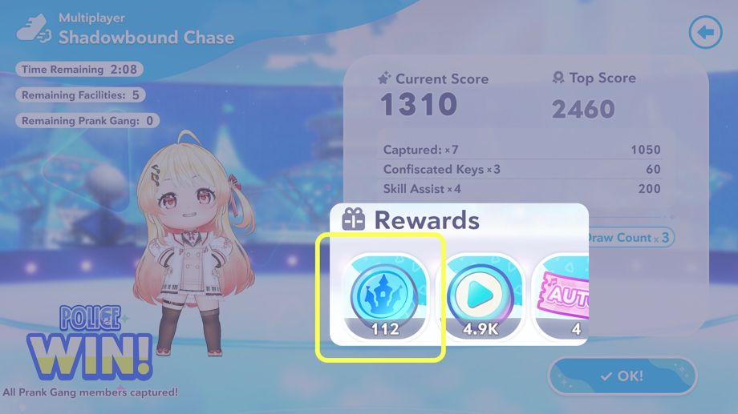

2026-08-28 11:00:00부터 신규 미니게임 「어둠 속 추적」가 개막!
◆미니게임 추가일
2026-08-28 11:00:00〜
◆참가 조건
구역 퀘스트 「어둠의 파티, 불꽃 튀는 추적」 클리어
※구역 퀘스트 「어둠의 파티, 불꽃 튀는 추격」는 메인 퀘스트 1장 「하모니 가든」을 클리어하면 해방됩니다.
※멀티 플레이의 프라이빗 룸에서는 메인 퀘스트 1장 4화 「Mythical Connection」을 클리어하면 플레이할 수 있습니다.
신규 미니게임 「어둠 속 추적」 개요

어둠 속 추적은 도망치는 장난꾸러기 팀과 잡는 순찰대 팀, 두 팀으로 나뉘어 대전하는 미니게임입니다.
장난꾸러기 팀 개요

장난꾸러기 팀은 순찰대를 피해 다니며 시설 5곳을 개방하면 승리합니다.
시설을 개방하려면 파크 내에 떨어져 있는 열쇠를 사용해야 합니다.
◆조작 방법
・픽: 열쇠 근처에서 탭하면 열쇠를 주울 수 있습니다.
・유즈: 열쇠를 가진 상태에서 시설에 가까이 다가가 길게 누르면 열쇠를 사용할 수 있습니다.
※열쇠를 가지고 시설에 가까이 다가가면 버튼이 전환됩니다.
순찰대 팀 개요

순찰대 팀은 장난꾸러기 팀 전원을 붙잡으면 승리합니다.
장난꾸러기 팀에 가까이 다가가 「캐치」를 누르면 붙잡을 수 있습니다.
또한, 제한 시간 내에 장난꾸러기 팀이 시설 5곳을 개방하지 못한 경우에도 순찰대 팀의 승리로 처리됩니다.
장난꾸러기 팀의 구조에 대해

장난꾸러기 팀은 붙잡힌 아군을 구출할 수 있습니다.
붙잡힌 아군 근처에서 「구조」을 길게 누르면 구할 수 있습니다.
장난꾸러기 팀의 레이저 기믹에 대해

장난꾸러기 팀은 레이저 기믹을 활용하면 유리하게 경기를 진행할 수 있습니다.
레이저 기믹을 해제하면 각 시설 개방에 필요한 열쇠 개수를 1개 줄일 수 있습니다.
레이저 기믹은 앞쪽 스위치를 밟으면 해제할 수 있습니다.
스위치는 2개가 있으며, 2명이 올라가면 더 빠르게 해제할 수 있습니다.
순찰대 팀의 스킬에 대해

순찰대 팀은 스킬을 사용할 수 있습니다.
사용할 수 있는 스킬은 3종류이며, 순찰대 팀 플레이어마다 무작위로 배정됩니다.
◆스킬 설명
・스피드 업: 이동 속도가 증가합니다
・레이더: 근처에 있는 장난꾸러기 팀의 위치를 알 수 있습니다
・스텔스: 반투명 상태가 되어 장난꾸러기 팀에게 잘 보이지 않게 됩니다
※스킬은 일정 시간 동안만 효과가 적용됩니다.
※스킬을 사용하면 게이지가 충전될 때까지 다시 사용할 수 없습니다.
보상에 대해

보상은 승패와 관계없이 점수에 따라 획득할 수 있습니다.
보상으로 하모니 가든 코인을 획득할 수 있습니다.
하모니 가든 코인은 네포라보 마트에서 다양한 아이템과 교환할 수 있습니다.
주의 사항
・개최 기간 및 내용은 예고 없이 변경될 수 있습니다.